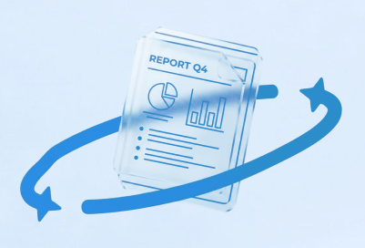

Unlock AI Value in Insurance
Unlock AI Value in Insurance
Are you ready to unlock your AI Value in insurance?
Touch to begin
An Infosys framework
Six pools of AI value in insurance
Infosys' own model for insurance, not an industry standard. Each pool is somewhere AI creates measurable value for carriers, and somewhere programmes commonly stall.
Tap a value pool to explore
0 of 6 read
Swipe to change pool
Question 1 out of 6

Smart analysisAccess the diagnostic result
Check your inbox for the full report
Sent to . Your results are next.
Your position
Against the benchmark
Strategic priorities
AI Focus Areas
Report dispatched
On its way
QR · PLACEHOLDER
Sent to . Three ways to get it back:
- 01Scan the code above
- 02Open the email we just sent
- 03Scan your badge at the booth to see and discuss your result
Resetting in 12s